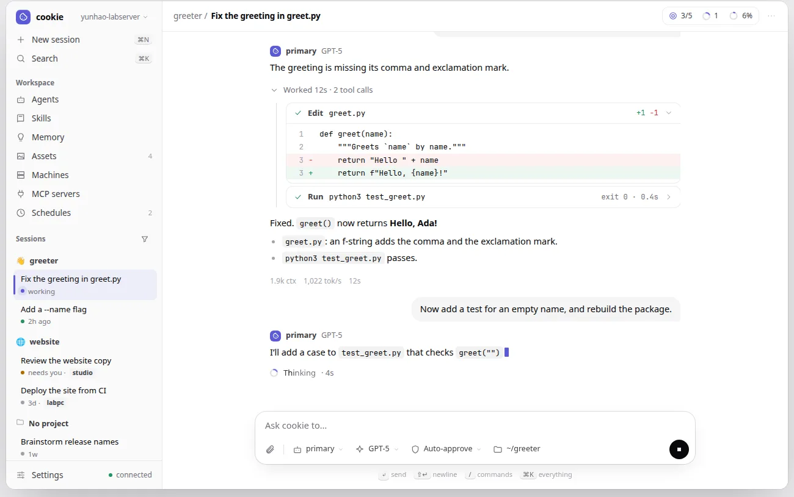
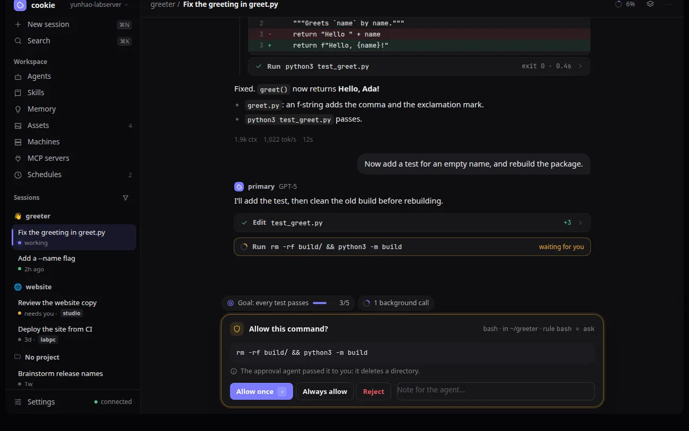
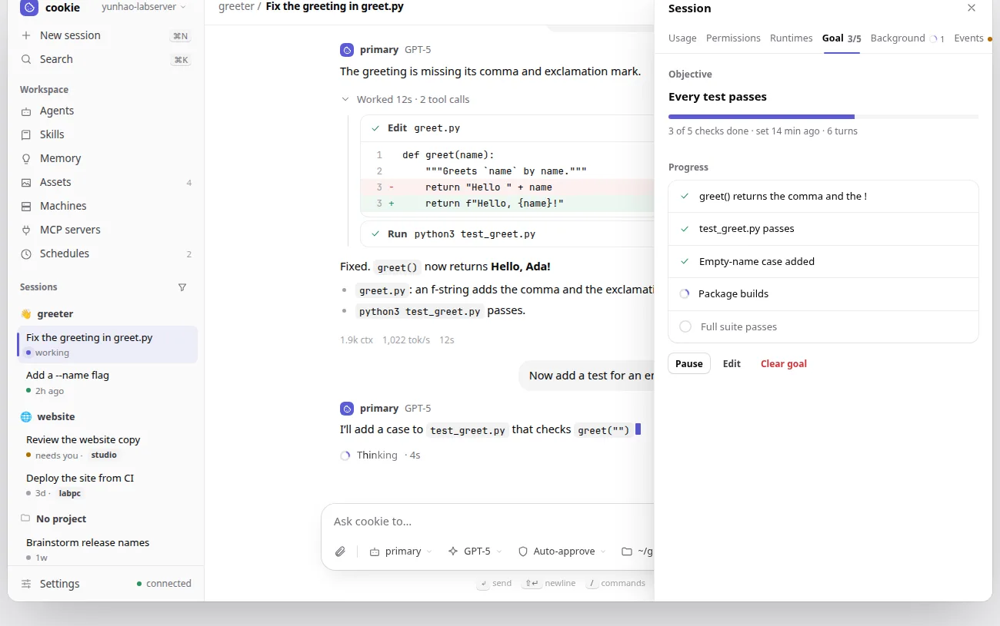
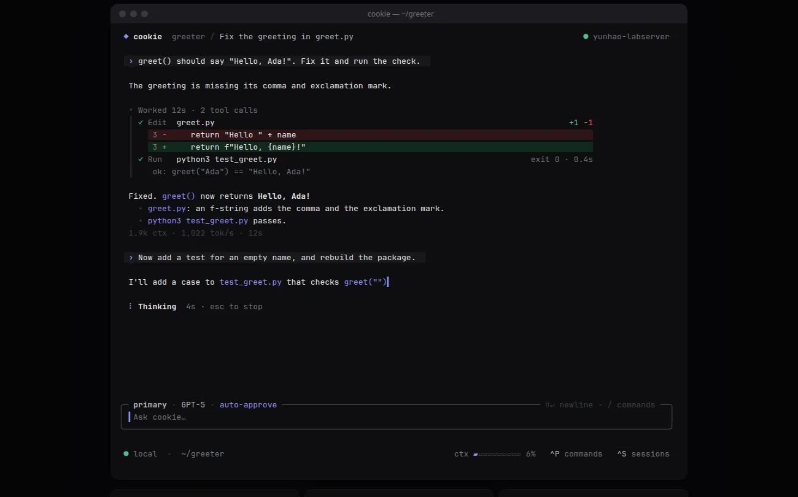
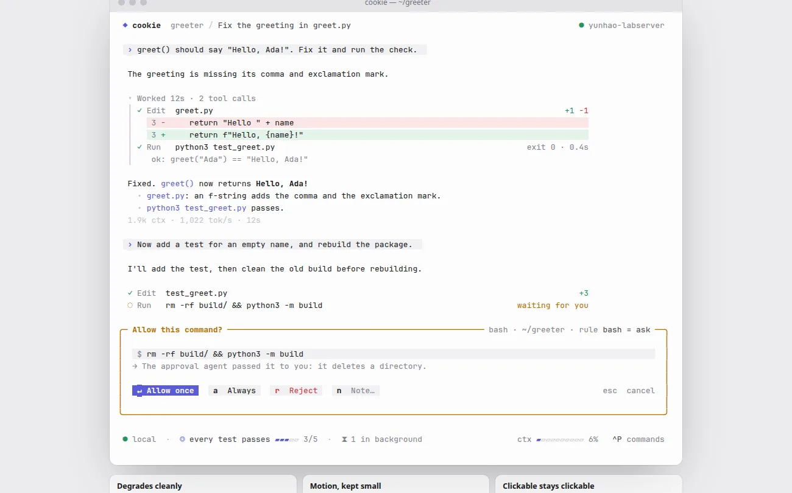

Quiet Ink: a new look for both clients¶
Status: implemented (2026-11-02), in the phases of
section 7, with the user's decisions of 2026-11-02 in
section 2. Client-only: no client, plugin, or runtime
protocol change, no session history change, no config.toml change. One
tui.toml change: the mono and high-contrast themes are removed (D12).
1. Goal and scope¶
Today both clients wear the cookie palette: cream, caramel, and espresso surfaces, a bordered box around nearly everything, an icon rail beside a session list on the web, and a framed transcript with a doubled gutter in the TUI.
This spec restyles every view of both clients in one design, Quiet Ink: neutral greys, one indigo accent, hairline dividers instead of boxes, a floating composer, and a little motion where something is live. It also reshapes a few surfaces (one sidebar, a session panel, live header badges, menus at their chips, the approval in the composer's place) without changing what any of them can do.
Out of scope: the landing site and the documentation theme, which keep the cookie palette for now (D13); features, keys, and commands, which stay as they are.
2. Decisions¶
Decided 2026-11-02, after an inspiration board of three directions and an interactive preview of the chosen one:
- D1, direction. Quiet Ink (direction A), with the floating composer and 720 px reading width of direction B and the motion of direction C in small doses: a pulse on live sessions, a shimmer on the working label, springy menus and sheets. Light and dark are equals.
- D2, scope. Every view of the web client and the TUI.
- D3, one sidebar (web). The icon rail and the session list merge: New session and Search at the top, the views under Workspace (Agents, Skills, Memory, Assets, Machines, MCP servers, Schedules), then the sessions by project, then Settings and the connection at the bottom.
- D4, no command palette. The ⌘K palette is not built. The Session commands sheet (the header's ⋮) and the session list's search stay, restyled.
- D5, a session panel (web). Usage, Permissions, Runtimes, Goal, Background, and Events become tabs of one right-hand Session sheet instead of six sheets. Each tab shows what its sheet shows today. The Session commands sheet's entries open the panel at their tab.
- D6, live header badges. The session header shows what is live: the
goal (
◎ 3/5, finished items of the checklist, paused shown as such), background calls running (spinner and count), approvals waiting (amber), and the context ring, always. A badge appears when its state starts, follows it, and leaves when it ends; clicking one opens the session panel at its tab. The panel's tabs carry the same counts. In the TUI the same parts join the status line, each only while active, and open the goal detail and background panel when clicked. - D7, menus at their chips. On a desktop the composer's agent, model, and permission mode chips open small menus anchored to the chip instead of full-height sheets; on a phone they are bottom sheets.
- D8, the approval takes the composer's place, in both clients, until it is answered.
- D9, the TUI without frames. No box around the transcript and no
‖gutter. The composer is the one rounded box, with the agent, model, and mode in its top edge (clickable as today). The status line is plain text and key hints. - D10, accent. Indigo:
#5b5bd6on light,#7c7cffon dark. - D11, type. Inter for the web's interface, bundled (variable woff2,
Latin subset, OFL-1.1, credited in the third-party notices); JetBrains
Mono stays for code, paths, and numbers in tables. Labels such as
primary · GPT-5move from monospace to the sans. - D12, two TUI themes removed.
theme = "mono"andtheme = "high-contrast"(and the sameCOOKIE_THEMEvalues) go away;tui.tomlacceptsauto,default, anddark, and the removed values fail as unknown strings do.NO_COLORandTERM=dumbkeep working: they drop the colour depth to none on the selected light or dark theme, which then shows state by bold, italic, underline, and reverse only. - D14, Back on a phone (added 2026-11-02). Android's Back gesture and
button, and a browser's Back, step back through the page instead of
leaving it: an open menu, sheet, dialog, or the session panel closes
first, then an editor or a Settings section, then the drawer, then a
view other than the conversation returns to it. Only Back from the
conversation with nothing open leaves the installed app. The page's
existing history layers (
workspace/nav.rs) grow to cover these. - D15, right-click on a desktop (added 2026-11-02). With a mouse or trackpad, right-clicking anything that has actions opens them as a context menu at the pointer: the same actions as its ⋮ button or a touch long press (session rows, project headers, messages, agents, memories, assets, runtimes, schedules). One menu component serves them all, closes on Escape, a click outside, or Back (D14), and takes the arrow keys. The browser's own menu stays where it is the useful one: over selected text, links, text fields, and code, and with Shift held.
- D13, the site stays. The landing site and the documentation theme keep the cookie palette for now; only the client screenshots they show are refreshed.
The interactive preview shows every screen in both themes (the web's and the TUI's, with a switch for each); it is the reference for what the phases build, with these exceptions decided after it: no command palette (D4), the back and right-click behaviour (D14, D15).





3. Tokens¶
The web's palette becomes semantic tokens that switch with the dark
class, so a class names a role once (bg-raised) instead of a light and a
dark colour (bg-toasted dark:bg-ember). The TUI's Palette tables take
the same values.
| Token | Light | Dark | Role |
|---|---|---|---|
bg |
#ffffff |
#0e0e10 |
page, transcript |
bg2 |
#fafafa |
#0a0a0c |
sidebar, editors |
raised |
#ffffff |
#17171a |
cards, menus, sheets |
sunken |
#f4f4f5 |
#1b1b1f |
user bubble, inputs' fill, code |
fg |
#09090b |
#ededef |
text |
fg2 |
#3f3f46 |
#b4b4bc |
secondary text |
muted |
#71717a |
#86868f |
meta, placeholders |
faint |
#a1a1aa |
#5c5c66 |
line numbers, separators |
line / line2 |
7.5 % / 13 % black | 7 % / 12 % white | hairlines |
accent |
#5b5bd6 |
#7c7cff |
the one accent |
ok, bad, warn |
#26935f, #d1343b, #b26b00 |
#4cc38a, #f2555a, #e5a93b |
states, each with a soft tint |
The machine badges' eight hues stay. Every foreground keeps WCAG AA on its surface, and no state is shown by colour alone.
Type scale 12 / 12.5 / 13.5 / 14.5 / 22 px; radii 6 / 8 / 10 / 12 / 18 px;
three shadows (small, menu, sheet). Motion: 120–300 ms with one ease-out
curve; every animation stops under prefers-reduced-motion.
4. Web¶
- Shell (D3). One 256 px sidebar. The session list keeps its project sections, pins, unread bubbles, machine badges, select mode, search, and filter (the filter and search move into the Sessions heading's row). Live sessions pulse; the selected row has a tint and an accent bar.
- Session header. Breadcrumb (project / title), the badges of D6, and ⋮ for the Session commands sheet.
- Transcript. User turns are grey bubbles; agent turns open with the
agent and model in the sans. The reduced mode's fold reads
Worked 12s · 2 tool callsand opens onto a thin timeline of tool rows. Tool rows are one line (status, verb, argument,+n −nor exit code) and open with a height transition; diffs use soft tints. The pinned rows (system prompt, tools) become small pills. Turn stats are quiet text; copy, revert, and fork show on hover. - Composer. One floating card, 18 px corners, with attachments and the agent, model, mode, and folder chips inside; the send button becomes stop while a run goes. While an approval waits (D8) it is replaced by the approval card: command, where it runs and the rule that asked, the reviewer's reason, Allow once, Always allow, Reject, and a note.
- Session panel (D5) and chip menus (D7) as decided.
- Views. Agents and Memory as list and editor; Skills grouped into official and the user's; Assets as a preview grid; Machines as one panel per machine with its runtimes as rows (no cards inside cards); Schedules as rows with the schedule in words over its cron line, a pause switch, and recent runs; Settings with its own side list and grouped panels; every empty state an icon, one sentence, and an action. Onboarding and Connect are centred cards on a soft accent glow.
- Phone. The sidebar is a drawer; menus and the session panel are bottom sheets. Back steps out of the innermost open thing first (D14).
5. TUI¶
ThemeKind::DefaultandThemeKind::Darktake the tokens of section 3, quantized to ANSI-256 and ANSI-16 as today.ThemeKind::Mono,ThemeKind::HighContrast, and their branches intheme.rsgo (D12);ColorLevel::Nonekeeps the no-colour rendering. The theme reference (docs/site/tui/theme.md) and thetui.tomltests follow.- Session view (D9). A one-line header (
◆ cookie project / titleand the machine); user turns on a raised band with an accent›; tool calls on a│timeline under the reduced fold; diffs with tinted rows; the working line a braille spinner and a pulsingThinking. - Composer and status line. The rounded composer box with agent,
model, and mode in its top edge; below it the status line: connection
and workspace, then the goal and background parts of D6 while active,
then context and key hints on the right. The goal and background bars
(
render_goal_bar,render_background_bar) become those parts. - Approval (D8). A box in the warning colour in the composer's place, with the command on a raised row and its answers as key caps.
- Overlays and panels. Pickers and panels float on a raised surface
over the dimmed screen; the selected row gets a tint and an accent
▍; the management panels share one tab strip with an underline. - Every click target keeps its
PointerTargetand visible hover; new ones (the status line's goal and background parts) get both, perAGENTS.md.
6. What does not change¶
The protocol, the reducer, every key binding and command, what each view can do, the transcript modes, and the tests' rule against pinning looks. Tests change only where structure changes: which rows and regions exist, what opens what, and the new pointer targets.
7. Phases¶
Each phase is looked at in light and dark (scripts/web-screenshots.sh
--all, the TUI's render_preview) before its commit.
- Tokens and fonts. Web: semantic tokens, every class migrated, Inter bundled. TUI: the new palette tables, the two themes removed. The layout stays as it is.
- Web shell. The one sidebar, the session header with its badges, the session panel, and the context menu of D15 on the sidebar's rows.
- Web session. Transcript, composer, approval card, chip menus, and the context menu on messages.
- Web views and phone. Every other view, onboarding, connect, the phone layout, and Back (D14).
- TUI session. Frames removed, the composer's edge, the status line with its live parts, the approval box.
- TUI overlays and panels.
- Pictures and docs. The bundled screenshots, the landing page's client pictures, and user docs that describe the old rail or sheets.
8. Implementation notes¶
- Phase 1 (2026-11-02). The web's colours are semantic tokens
(
--qi-*custom properties, switched by.dark, exposed to Tailwind through@theme inline); a class pair such asbg-toasted dark:bg-emberbecamebg-sunken. Inter ships as one variable woff2 subset to Latin (116 KB), credited in Settings › About and the third-party notices. The TUI's palette tables are by role (surface,sunken,line,fg,muted,accent, …) instead of by bakery hue; without colour,semantickeepsDIMso quiet roles stay quieter. - Phase 2 (2026-11-02). Beyond the decisions: the icons moved from
Font Awesome's solid set to Lucide's outlines (ISC), drawn at a 1.75
stroke, with Font Awesome kept for the brand logos Lucide lacks; Agents'
list stopped borrowing the sessions' sidebar and became a first-level
list like Memory's; the sidebar button carries the unread dot the rail's
Chat button had. Back's history layers are
View,Section,Editor,Sidebar, andPanel, outermost first. The session panel's tabs open their sheets through the commands the ⋮ menu runs, so each reads what it shows. Browser scenarios that pinned the rail's layout were rewritten as short checks of the sidebar and Back, or dropped. - Phase 3 (2026-11-02). The composer is one card: the text, then a row
of the attach buttons, the agent, model, mode, folder, and cost chips
(the bottom bar's, folded in), and the actions; the scrollbar gutter the
buttons used to dodge went with it. A waiting approval replaces the
card (
ApprovalDock, the oldest approval and how many more wait), and the phone's separate approvals line is gone. The agent, model, and mode pickers keep their sheet (#sheet) but draw it as a menu over their chip on wider windows (data-anchored). Replies' headers are the agent's name, then its model, in the sans; tool rows are raised cards on a hairline ring; the transcript and the composer share the 720 px column. - Phase 4 (2026-11-02). Buttons, fields, rows, panels, confirmations,
and empty states restyle through their shared constants and a pass over
the remaining bordered boxes; Settings' list has icons, with each
section's note on a phone only. Back reaches every small overlay through
one
Transientlayer that a row's menu, a context menu, and the media viewer register their close with. Right-click menus cover memories, schedules, assets, the agents panel's rows, runtimes, and your messages (their message menu). On a phone the sidebar's views are a four-column grid of tiles, so the sessions keep their room. - Phases 5 and 6 (2026-11-02). The conversation pane keeps its
one-cell margin but draws no frame: the top row is a header (the
session's title; the events filter and the scrolled note on the right),
so every geometry and hit region stays put. Replies'
│gutter is a hairline (Theme::gutter); the user's keeps the accent. The goal bar leads with◎and its checklist's progress, the background bar with⧗; they stay their own rows rather than joining the status line, whose width-fitting already spends the row. The status line's mode is the accent, its hintctrl+p commands. Every modal and the command palette dim the screen behind them (Theme::dimmed, a blend toward the surface in true colour,DIMelsewhere). - Phase 7 (2026-11-02). The install manifest's screenshots show the new look; the landing page keeps its pictures (D13). Below desktop widths every control keeps a finger's 44 px, since tablets take touch too; only a desktop's are 36 px.